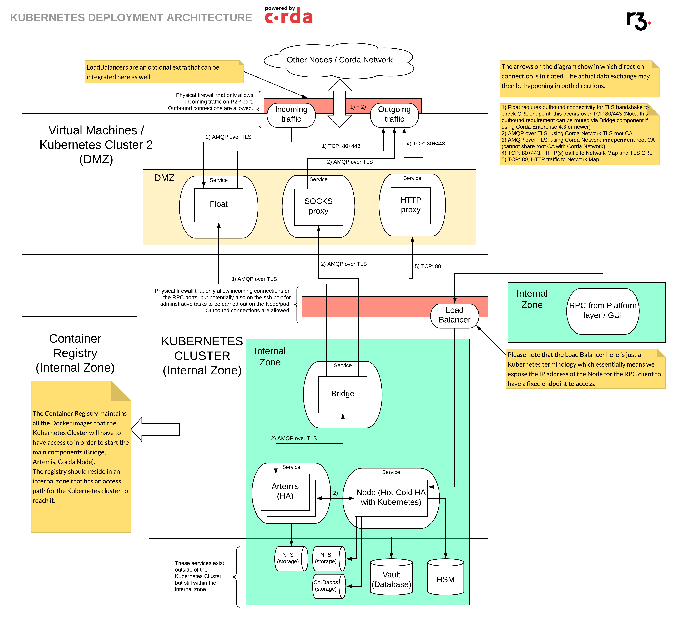

Architecture overview
Deploying a Corda Node along with a Corda Firewall by following best security practices should look like the picture below:
{kind=link}
Architecture explanation
Let us break this picture down and explain each section. The deployment targets best security practices by using Corda Firewall in the Bridge/Float mode, where one component, the bridge, sits in the internal zone and connects to the demilitarized zone (DMZ) component, the float, which will then listen for incoming connections from other nodes on the network.
Allowing for true DMZ when using Kubernetes does demand two physical Kubernetes clusters or alternatively the Float (and the proxies) can be hosted on virtual machines (VMs) sitting in DMZ.
If your security requirements are more relaxed, you also have the option of hosting the Float component in the main Kubernetes cluster, this can be useful in testing scenarios.
Demilitarized Zone (DMZ)
True DMZ means we can have physical separation of the data in the different zones. In addition we can have two firewalls to set up the DMZ.
The outer firewall is facing external sources, e.g. other nodes on the network / internet. This firewall should block all inbound connections except the specific ports required for inbound connections. The only inbound connection requirement is the AMQP over TLS traffic which does require one user-defined specific port to be opened up.
The internal firewall is protecting the internal zone from the DMZ. In true DMZ scenarios this firewall is blocking ALL inbound connections.
Corda Firewall allows for this mode of operation, where the Bridge sits in the internal zone and opens a connection to the Float component, thus there is no need for any inbound connections to the internal zone.
Corda Firewall (Bridge & Float)
The Corda Firewall is composed of two components, the Bridge and the Float, let’s look at what the separation of responsibilities between these two components is.
Corda Firewall: Bridge
The Bridge component of the Corda Firewall has the responsibility to connect to the Float component and establish a secure connection between the two components using mutually authenticated TLS.
The Bridge component should sit in the internal zone, behind a physical firewall that blocks all incoming traffic.
In addition to handling the incoming traffic to the Corda Node via the Float component, the Bridge component also has the responsibility to handle outbound communication from the Corda Node as well. This traffic can be routed via an optional SOCKS proxy.
Corda Firewall: Float
The Float component of the Corda Firewall has the responsibility to start up in a mode where it is only waiting for a connection on a port exposed towards the internal zone. The expectation is that the Bridge component will connect to this port, create a secure TLS connection and then take ownership of the Float component.
Only once the Bridge component has taken ownership of the Float, will the Float component continue with the next step. The next step is for the Float component to open the external facing port to accept traffic from the external zone (the internet). The external facing port should be protected by a physical firewall that only allows traffic in on the specific exposed port that the Float will allow inbound AMQP over TLS traffic on.
After this step, we have a fully operational Corda Firewall system up and running, where only the Float accepts incoming traffic (the Float is effectively a “listener” in the DMZ) and the Bridge handles outgoing traffic.
This setup allows the Corda Node, along with its Vault (database) to sit in an internal zone in a safe environment, isolated from any potential attackers.
SOCKS and HTTP Proxies
Having satisfied true DMZ requirements by using Corda Firewall for inbound connections, we should also do the same for outbound connections. This is where we can utilise SOCKS proxy and HTTP proxy.
Proxy Server
A proxy server is a server that acts as an intermediary for requests from clients seeking resources from other servers. The proxy server forwards requests to and from anywhere on the Internet.
SOCKS Proxy
The SOCKS proxy is there to provide a connection point for outbound AMQP over TLS traffic to other peer-to-peer nodes on the network. The SOCKS proxy sits in the DMZ. It takes the internal communication from the Bridge component and relays the information to the external nodes on the network. The SOCKS proxy terminates the connection from the local Corda Node and re-establishes a new connection to an external Node.
HTTP Proxy
The HTTP proxy acts as a connection point for outbound HTTP(s) traffic. The HTTP proxy sits in the DMZ. It takes the internal communication from the Bridge component to route the TLS CRL (Certificate Revocation List) checks via the HTTP proxy to the CRL end-point on the Corda Network. In addition it routes the traffic from the Node to the Network Map which is HTTP based traffic. The HTTP Proxy also masks the source IP address of the request from the Corda Node to the Internet.
Kubernetes Cluster
The benefits of using Kubernetes includes:
- Immutability - the services are deployed in an immutable fashion compared to traditional VM based deployments (traditionally random maintenance actions are performed on a VM diverging the running state from the expected state over time)
- Version guarantee - knowing what is running at any given time, relates to the immutable deployment
- Revision history - knowing what has changed and when, giving you the possibility to identify issues and rollback to a specific point in time
- Rolling updates - allows new versions to be deployed while the old ones are still running
- Self-healing - a component that fails can be automatically restarted and the system can re-organise to continue functioning again
- Infrastructure abstraction - the developers need not think about what hardware is required
In the image above, we show the option of using two Kubernetes clusters, one for DMZ and one for the internal one.
The internal Kubernetes cluster handles the following services:
- Bridge
- Node
- Artemis messaging server (Message Queue, MQ)
- Database connection
- HSM connection
- NFS storage connection
- Inbound connections via RPC from the UI (user interface) level, marked with Load Balancer in the image
The DMZ Kubernetes cluster can handle the following services:
- Float
- SOCKS proxy
- HTTP proxy
The DMZ Kubernetes cluster can utilise different namespaces to provide isolation between the above mentioned services, which means that they could be hosted within the same DMZ Kubernetes cluster. Optionally you can also host these components as independent virtual machines (VMs).
Connections & Communication Protocols
TLS
Since Corda has been designed with security in mind, most of the connections in the design above are utilising Transport Layer Security (TLS), sometimes also referred to as SSL. As of Corda 4.3 TLS 1.2 is used, once the transition to Java 11 is completed, we should see TLS 1.3 become the default.
AMQP over TLS
Cordas protocol for sending messages is Advanced Message Queuing Protocol (AMQP), this is just a way to send binary data in a reliable fashion. We always send the AMQP data over the TLS level to make it secure as well.
HTTP(S)
A few components cannot use TLS, namely when the TLS certificates have not been generated yet. One such instance is the HTTP connection to the Identity Manager to initiate a Certificate Signing Request (CSR). This CSR request is sent over HTTP and only once the CSR has been approved can the Node use TLS level encryption. In addition to this there is also access to the Network Map with HTTP. The reason for this is that the information stored in the Network Map is accessible to anyone on the network without the need to secure it further. Finally, we need access over HTTPS from the Float/Bridge to securely fetch Certificate Revocation List (CRL), depending on which Corda version is being used the Float does not need to reach out, instead the requests would be routed via the Bridge component.
Certificate Revocation List (CRL)
The CRL is there to revoke certificates for actors on the Network that no longer should be allowed to communicate. For example a Corda Node that has been removed from the Network could qualify.
Connection Sequence
In order to fully understand how this architecture is used, it is time to analyse how the different components communicate.
Float
Let us start off with the Float component, one of the two modes of the Corda Firewall:
- The Float component starts off in a mode where it is just waiting for a Bridge component to take control of it. In this mode, it is only listening on one port, the port where we expect the Bridge to connect to.
- The connection between the Bridge and the Float is mutually authenticated TLS using certificates that originate from a shared trust root.
- As the Bridge connects to the the Float component on its listening port, the TLS handshake occurrs and verifies that both the identities of the two components are as expected, but also that the trust root they both use is the same and is valid.
- Once the Bridge has taken control of the Float, the Float will enter into the listening mode, where it will open up a port for listening for external AMQP over TLS connections (the peer-to-peer (p2p) traffic).
- At this point the Corda Firewall component is fully started and established, ready to communicate with other nodes on the network.
Bridge
Next we will look at the Bridge component. Before the Bridge connects to the Float as mentioned above, the Bridge will connect to the Artemis MQ, whether the Artemis MQ is in-process in the Corda Node or running out-of-process as a stand-alone Artemis MQ does not matter, the Bridge initiates the connection. This connection is using mutually authenticated TLS, the same as the connection between the Bridge and the Float.
Artemis “out-of-process”
Artemis is always part of the messaging system used by a Corda Node. The default mode of operation is to have the Artemis MQ embedded in the Corda Node process itself. It is however possible to modify the configuration option to disable running the Artemis MQ inside the Corda Node process itself, in this case though, you will have to run an additional Artemis MQ service independently of the Corda Node.
This is what is meant by the term “out-of-process” Artemis.
If Artemis is running “out-of-process” there is one additional step, where the actual Corda Node also needs to connect to the Artemis MQ. This connection works just like the Bridge, using mutually authenticated TLS connection originating from the Corda Node to the Artemis MQ. This should be set up using a shared trust root for the TLS certificates of the components.
Complete Connection Sequence
At this point we have established the full connection sequence. We have:
- The Corda Node is connected to the Artemis MQ
- The Bridge is connected to the Artemis MQ
- The Bridge is connected to the Float
- The Bridge is optionally connected to SOCKS proxy for outbound AMQP over TLS traffic
- The Corda Node is optionally connected to HTTP proxy for outbound Network Map access
Now we can send and receive messages to/from other nodes on the network.
Internal Kubernetes Cluster Details
Let’s start by diving into the details of the internal zones Kubernetes cluster.
The main components, the Bridge, Artemis and the Node will all have Kubernetes services to handle port mapping and then Kubernetes deployments which set how many replicas (pods) should be deployed.
Bridge is currently using one replica running at any given time, if it fails it is rescheduled and reconnects to the Float on startup. The reason why we only use one at this point in time, is because there is currently only one Bridge per Float.
Artemis is currently not implemented in the related deployment scripts, but is envisioned to use two replicas where one is master and the other one will be the failover one, should master go down for any reason.
The Corda Node is using one replica always, because currently Corda Node only supports Hot-Cold HA, which means you cannot have two versions running at the same time, connected to the same database. This may change in future versions of Corda and in that case this decision may be revisited. In the meantime however, we can rely on Kubernetes to automatically restart a failed pod and self-heal.
It is worth noting that the Corda Node service is defined to be of type LoadBalancer, which is a Kubernetes specific way of adding a public IP address for accessing this pod from outside of the Kubernetes cluster itself by way of specifying the loadBalancerIP. The reason for exposing the IP address of the pod for the Corda Node service is to allow our Corda RPC client to be able to connect into the node and orchestrate Corda Flows and monitor the Corda Vault.
Each individual component will be using specific Docker images to run the containers. These images should be hosted in a container registry that the Kubernetes cluster has access to. There should be a corresponding Kubernetes Secret which contains the username/password and server to use to access the container registry. The default image pull policy is set to always download images, but this can be relaxed to if not present, once the deployment architecture has stabilized.
The main components also have some other requirements, namely they have to have valid configuration files that set the network information (ports & ip addresses to use) and also the certificates for communicating on the network with TLS/SSL and for signing the Corda transactions. These external dependencies are currently added to the Kubernetes cluster by way of a Kubernetes ConfigMap, which is a simple file that can define binary and non-binary data to be exposed as files within the cluster. These files are then mapped as volumes in the individual component deployments.
The database access from individual pods (for example the Corda Node) is handled without additional Kubernetes setup and instead by direct connection strings. This means that the pod has to have network access to the database, which should also be hosted in the internal zone.
Finally, we have the persistent storage that the pods may need, in order to store log content and / or other persistent data in the case of the Corda Node. This persistent storage is set up by use of Kubernetes Volumes. These volumes will have to have attached physical storage, for example in Azure that would be set up by use of Azure File shares under an Azure Storage Account. If using Azure Storage Accounts, the corresponding Kubernetes Secret should be used which defines the username/password with which to access the Storage Account.
An additional option is to use Hardware Security Modules (HSMs) to secure private key material, for example the private keys of the certificates. If HSMs are used, they will need to be available from the related components, Float, Bridge, Artemis and Corda Node.